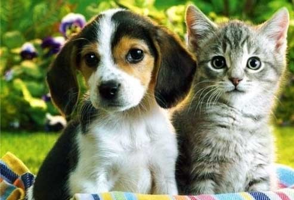

La Fundación Patitas de Corazón es una fundación sin ánimo de lucro, fue creada con el propósito de ayudar a los perros y gatos callejeros que sufren de abandono, maltrato, accidentes, hambre e infinidad de aberraciones que a diario suceden en nuestra ciudad la cual sus índices de animales callejeros son muy altos, comparados con otras ciudades del país. A través de diferentes actividades, en la Fundación Patitas de Corazón, tratamos de transformar la percepción que algunas personas tienen como simples animales callejeros hacía una visión mucho más clara, que son seres vivos que sienten y por esta simple razón tienen derecho a ser respetados, amados y acogidos en un hogar, donde se les brinde, como mínimo, los beneficios de techo, comida y cuidados.Ante la imposibilidad de albergarlos a todos y controlar la reproducción masiva de cachorros y gatos, encontramos como solución fomentar la esterilización gratuita. Hacemos campañas en los barrios de escasos recursos, (estratos 1 y 2) con la ayuda de padrinos que donan los recursos para las cirugías.
